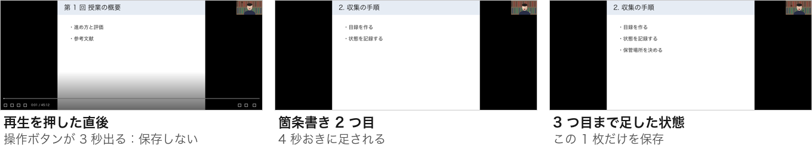
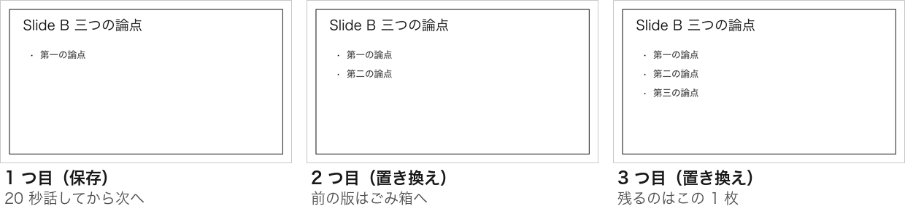
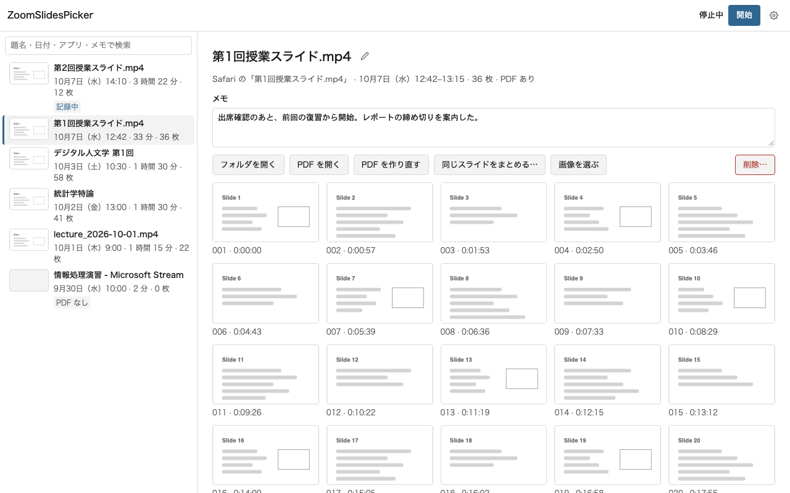
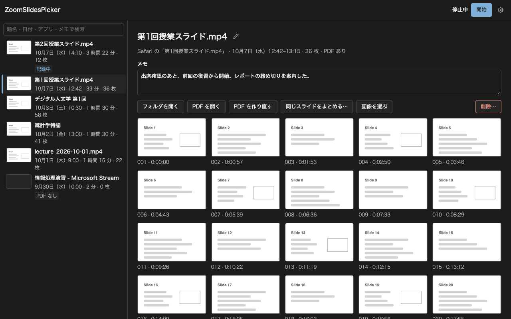
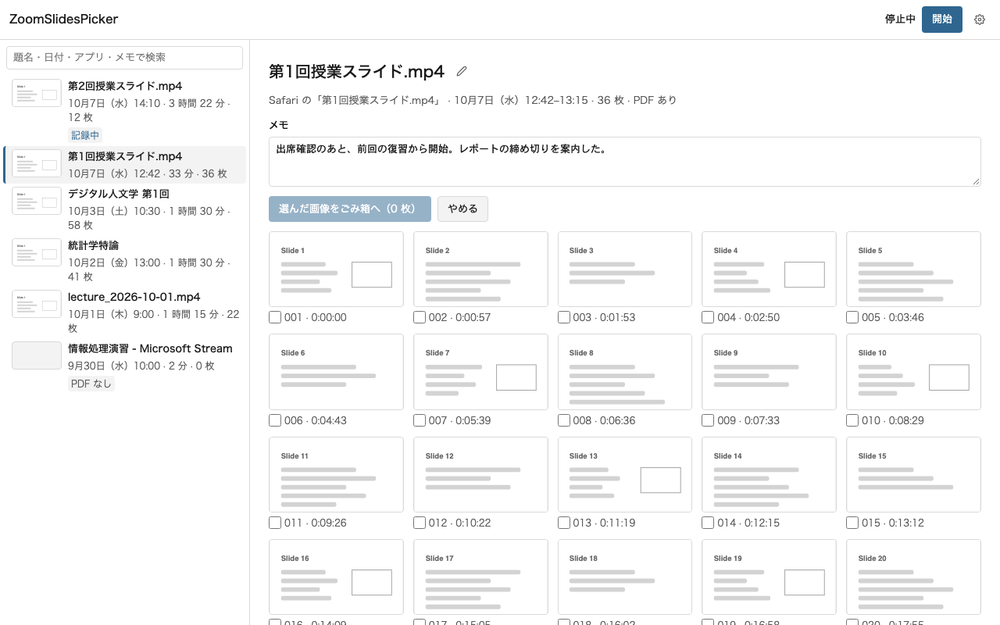
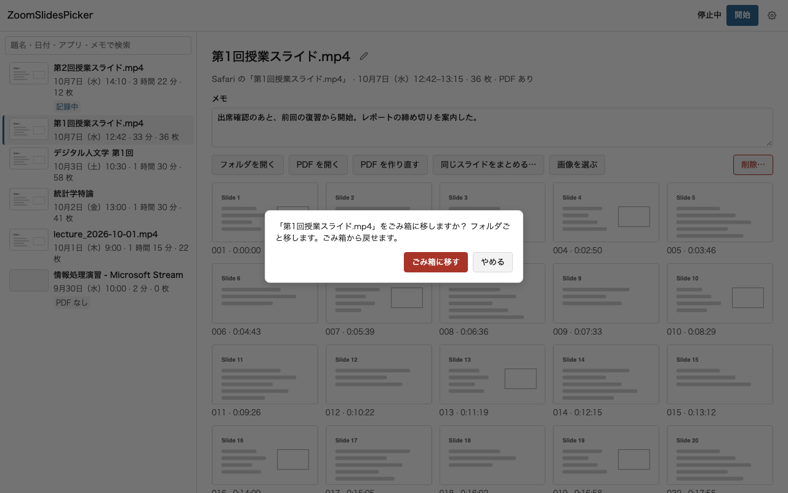
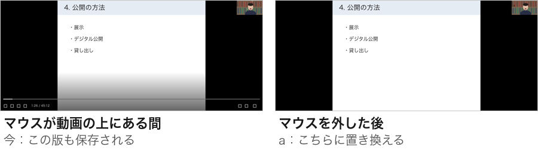

<title>ZoomSlidesPicker 判断シート</title>
<style>
  :root {
    --paper: #f3f3f2;
    --surface: #ffffff;
    --ink: #171717;
    --ink-2: #4f4f4f;
    --rule: #d8d8d8;
    --accent: #2c5d88;
    --accent-soft: #e7eef6;
    --on-accent: #ffffff;
    --danger: #a02c2c;
    --mock: #e9e9e8;
    --on-backdrop: #f4f4f4;
  }
  @media (prefers-color-scheme: dark) {
    :root:not([data-theme="light"]) {
      color-scheme: dark;
      --paper: #131313;
      --surface: #1c1c1c;
      --ink: #ececec;
      --ink-2: #a9a9a9;
      --rule: #353535;
      --accent: #90bbe6;
      --accent-soft: #1d2b39;
      --on-accent: #0e1822;
      --danger: #f0a3a3;
      --mock: #262626;
    }
  }
  :root[data-theme="dark"] {
    color-scheme: dark;
    --paper: #131313;
    --surface: #1c1c1c;
    --ink: #ececec;
    --ink-2: #a9a9a9;
    --rule: #353535;
    --accent: #90bbe6;
    --accent-soft: #1d2b39;
    --on-accent: #0e1822;
    --danger: #f0a3a3;
    --mock: #262626;
  }

  body {
    margin: 0;
    background: var(--paper);
    color: var(--ink);
    font-family: -apple-system, BlinkMacSystemFont, "Hiragino Sans", "Hiragino Kaku Gothic ProN", "Noto Sans JP", "Yu Gothic UI", Meiryo, sans-serif;
    font-size: 15px;
    line-height: 1.75;
  }
  .wrap { max-width: 760px; margin: 0 auto; padding: 0 16px; }
  .sr-only { position: absolute; width: 1px; height: 1px; overflow: hidden; clip: rect(0 0 0 0); white-space: nowrap; }
  :focus-visible { outline: 2px solid var(--accent); outline-offset: 2px; }
  h1, h2, h3 { text-wrap: balance; }
  p { margin: 0 0 12px; }
  ul, ol { margin: 0; padding-left: 1.25em; }
  li + li { margin-top: 6px; }
  code { font-family: ui-monospace, "SF Mono", Menlo, monospace; font-size: 0.9em; overflow-wrap: anywhere; }
  .muted { color: var(--ink-2); }

  .top {
    position: sticky;
    top: env(safe-area-inset-top, 0px);
    z-index: 2;
    background: var(--paper);
    border-bottom: 1px solid var(--rule);
  }
  .top .wrap { display: flex; flex-wrap: wrap; justify-content: space-between; gap: 4px 16px; padding-block: 10px; }
  .top .round { margin: 0; font-size: 13px; color: var(--ink-2); }
  .status { display: flex; flex-wrap: wrap; gap: 4px 12px; }
  #progress { font-size: 13px; color: var(--ink-2); font-variant-numeric: tabular-nums; }
  #save { font-size: 13px; color: var(--ink-2); }
  #save.err { color: var(--danger); }

  header.intro { padding-block: 28px 8px; }
  h1 { font-size: 26px; line-height: 1.3; margin: 0 0 12px; font-weight: 700; letter-spacing: -0.01em; }
  .lede { font-size: 16px; margin-bottom: 8px; }
  .block h2 { font-size: 16px; margin: 28px 0 10px; font-weight: 700; }
  dl.state { display: grid; grid-template-columns: max-content 1fr; gap: 6px 16px; margin: 0; }
  dl.state dt { color: var(--ink-2); }
  dl.state dd { margin: 0; min-width: 0; }
  @media (max-width: 520px) {
    dl.state { grid-template-columns: 1fr; }
    dl.state dd { margin-bottom: 8px; }
  }

  .finding { padding-block: 14px; border-top: 1px solid var(--rule); }
  .finding h3 { font-size: 15px; margin: 0 0 6px; }
  .finding p { color: var(--ink-2); }

  section.q { padding-block: 28px; border-top: 1px solid var(--rule); }
  .q-title { display: flex; align-items: baseline; gap: 10px; margin: 0 0 6px; font-size: 19px; line-height: 1.4; font-weight: 700; }
  .qid { font-size: 13px; color: var(--ink-2); font-variant-numeric: tabular-nums; font-weight: 500; letter-spacing: 0.02em; }
  .ctx { color: var(--ink-2); margin-bottom: 16px; }
  fieldset.opts { border: 0; margin: 0; padding: 0; min-width: 0; display: grid; gap: 12px; }
  .opt {
    display: grid;
    gap: 10px;
    padding: 14px;
    background: var(--surface);
    border: 1px solid var(--rule);
    border-radius: 8px;
    min-width: 0;
  }
  .opt:has(input:checked) { border-color: var(--accent); box-shadow: inset 0 0 0 1px var(--accent); }
  .opt label { display: grid; grid-template-columns: auto 1fr; gap: 0 12px; align-items: start; cursor: pointer; }
  .opt input { margin: 6px 0 0; width: 18px; height: 18px; accent-color: var(--accent); }
  .opt-title { font-weight: 700; }
  .opt-desc { display: block; font-weight: 400; color: var(--ink-2); margin-top: 2px; }
  .opt-why { display: block; margin-top: 4px; font-size: 14px; }
  .rec {
    display: inline-block;
    margin-left: 8px;
    padding: 0 6px;
    font-size: 12px;
    font-weight: 600;
    line-height: 1.6;
    color: var(--accent);
    border: 1px solid var(--accent);
    border-radius: 4px;
    vertical-align: 1px;
  }
  figure.shots { margin: 0; display: grid; gap: 10px; }
  figure.shots figcaption { font-size: 13px; color: var(--ink-2); }
  button.zoomable { all: unset; display: block; cursor: zoom-in; max-width: 100%; border-radius: 6px; }
  button.zoomable img, figure img {
    display: block;
    width: 100%;
    max-width: 100%;
    height: auto;
    background: var(--surface);
    border: 1px solid var(--rule);
    border-radius: 6px;
  }
  .memo { margin-top: 14px; }
  .memo label { display: block; font-size: 13px; color: var(--ink-2); margin-bottom: 4px; }
  textarea {
    display: block;
    width: 100%;
    box-sizing: border-box;
    font: inherit;
    color: var(--ink);
    background: var(--surface);
    border: 1px solid var(--rule);
    border-radius: 6px;
    padding: 8px 10px;
    resize: vertical;
  }
  .note { font-size: 14px; color: var(--ink-2); margin-top: 10px; }

  details.doc { margin-top: 16px; background: var(--surface); border: 1px solid var(--rule); border-radius: 8px; }
  details.doc > summary { cursor: pointer; padding: 12px 14px; font-weight: 600; }
  .doc-body { padding: 0 16px 16px; overflow-wrap: anywhere; }
  .doc-body h1 { font-size: 20px; margin: 8px 0 12px; }
  .doc-body h2 { font-size: 17px; margin: 22px 0 8px; }
  .doc-body h3 { font-size: 15px; margin: 18px 0 6px; }
  .doc-body li + li { margin-top: 4px; }
  .doc-body ul, .doc-body ol { margin-bottom: 10px; }
  .scroll { overflow-x: auto; margin-bottom: 12px; }
  .doc-body table { border-collapse: collapse; font-size: 14px; min-width: 100%; }
  .doc-body th, .doc-body td { border: 1px solid var(--rule); padding: 4px 8px; text-align: left; vertical-align: top; }
  pre.diff {
    margin: 0;
    padding: 12px 14px;
    overflow-x: auto;
    font-family: ui-monospace, "SF Mono", Menlo, monospace;
    font-size: 12px;
    line-height: 1.55;
    white-space: pre;
  }

  .mock {
    background: var(--mock);
    border: 1px dashed var(--ink-2);
    border-radius: 8px;
    padding: 12px;
    display: grid;
    gap: 10px;
    min-width: 0;
  }
  .mock-tag { font-size: 12px; color: var(--ink-2); letter-spacing: 0.04em; }
  .mock-bar {
    display: flex;
    justify-content: flex-end;
    align-items: center;
    gap: 8px;
    padding: 4px 10px;
    background: var(--surface);
    border-radius: 4px;
    font-size: 12px;
    font-variant-numeric: tabular-nums;
  }
  .mock-icon { width: 12px; height: 12px; border-radius: 3px; background: var(--ink); }
  .mock-pop {
    justify-self: end;
    width: min(280px, 100%);
    box-sizing: border-box;
    background: var(--surface);
    border: 1px solid var(--rule);
    border-radius: 10px;
    padding: 12px;
    display: grid;
    gap: 10px;
  }
  .mock-row { display: flex; flex-wrap: wrap; justify-content: space-between; align-items: center; gap: 6px; font-size: 13px; }
  .mock-row .n { font-variant-numeric: tabular-nums; }
  .mock-thumb { display: block; width: 100%; height: auto; border-radius: 4px; border: 1px solid var(--rule); }
  .mock-primary {
    padding: 6px 10px;
    text-align: center;
    border-radius: 6px;
    background: var(--accent);
    color: var(--on-accent);
    font-size: 13px;
    font-weight: 600;
  }
  .mock-secondary { display: flex; flex-wrap: wrap; gap: 6px; }
  .mock-secondary span {
    padding: 3px 8px;
    border: 1px solid var(--rule);
    border-radius: 6px;
    font-size: 12px;
  }
  .mock-win { background: var(--surface); border: 1px solid var(--rule); border-radius: 10px; overflow: hidden; }
  .mock-title { padding: 6px 10px; font-size: 12px; color: var(--ink-2); border-bottom: 1px solid var(--rule); }
  .mock-body { display: grid; grid-template-columns: minmax(0, 3fr) minmax(0, 2fr); gap: 12px; padding: 12px; }
  .mock-body .side { display: grid; gap: 8px; align-content: start; }
  @media (max-width: 520px) { .mock-body { grid-template-columns: 1fr; } }

  dialog.zoom { border: 0; padding: 0; background: transparent; max-width: min(96vw, 1400px); }
  dialog.zoom::backdrop { background: rgba(0, 0, 0, 0.72); }
  dialog.zoom .zoom-box { display: grid; gap: 8px; }
  dialog.zoom img { display: block; width: 100%; height: auto; background: var(--surface); border-radius: 6px; }
  dialog.zoom .zoom-bar { display: flex; justify-content: space-between; align-items: center; gap: 12px; color: var(--on-backdrop); font-size: 14px; }
  dialog.zoom button {
    font: inherit;
    padding: 6px 12px;
    border-radius: 6px;
    border: 1px solid var(--on-backdrop);
    background: transparent;
    color: var(--on-backdrop);
    cursor: pointer;
  }

  .other textarea { min-height: 96px; }
  .copy-row { display: flex; flex-wrap: wrap; align-items: center; gap: 12px; margin-top: 12px; }
  .btn {
    font: inherit;
    padding: 8px 16px;
    border-radius: 6px;
    border: 1px solid var(--accent);
    background: var(--accent);
    color: var(--on-accent);
    cursor: pointer;
  }
  #copy-out { margin-top: 12px; min-height: 180px; font-size: 13px; line-height: 1.6; font-family: ui-monospace, "SF Mono", Menlo, monospace; }
  footer.next { padding-block: 24px 48px; border-top: 1px solid var(--rule); margin-top: 28px; }
</style>
<header class="top">
  <div class="wrap">
    <p class="round">ラウンド 4 ・ 授業動画の検証と履歴の窓（0.1.3）</p>
    <div class="status">
      <span id="progress">回答 0 / 5</span>
      <span id="save" role="status" aria-live="polite">保存先を確かめています…</span>
    </div>
  </div>
</header>
<main class="wrap">
  <header class="intro">
    <h1>ZoomSlidesPicker 判断シート</h1>
    <p class="lede">授業動画での検証の結果と、それを受けた判定の直し、R3-2 の置き換え、履歴の窓をまとめた 0.1.3 ができました。受け入れの確認が 3 問、決めてほしいことが 2 問です。推奨が先頭にあり、選ぶと自動で保存されます。</p>
  </header>

  <section class="block" aria-labelledby="h-state">
    <h2 id="h-state">作業の状態</h2>
    <dl class="state">
      <dt>0.1.3</dt>
      <dd>main に取り込み済み。テストと検査はすべて通過。Mac 版は <code>target/release/bundle/dmg/ZoomSlidesPicker_0.1.3_aarch64.dmg</code>、Windows 版はチャットで送る zip（手順書つき）。今の Mac で動いているのは古い版なので、入れ替えてください（署名がないので、画面収録の許可をもう一度求められます）。</dd>
      <dt>履歴の窓</dt>
      <dd>起動すると開きます。実機では、起動して一覧を読み、小さな画像を作るところまで確かめました。見た目は、確かめる間に画面がロックされたので、下の画像（見本のデータ）でしか見ていません。</dd>
      <dt>今日の記録（12:42）</dt>
      <dd>残す 23 枚の一覧をチャットで送りました（授業の内容が写るので、このページには載せていません）。整理はまだしていません。</dd>
      <dt>Windows</dt>
      <dd>0.1.2 の確認はまだなので、0.1.3 で確かめてください。履歴の窓の確認を手順書に足しました。</dd>
    </dl>
  </section>

  <section class="block" aria-labelledby="h-found">
    <h2 id="h-found">授業動画（Safari、1.5 倍速、40 分）で分かったこと</h2>
    <p class="muted">画像は合成の画面（fixture F9、F10）です。授業の画面は、このページには載せていません。授業の記録は、確かめた後に消しました。</p>
    <div class="finding">
      <h3>取りこぼしはなし。ただし、保存 58 枚のうち 16 枚が余分</h3>
      <p>3 秒以上映ったスライドは、すべて保存されていました。余分の内訳は、右上の小さなカメラによる同じスライドの再保存 11 枚、Safari の操作ボタンが重なった版 2 枚、動画の中の PowerPoint の操作ボタンが写った版 1 枚、箇条書きの途中の段階 2 枚です。</p>
    </div>
    <div class="finding">
      <h3>直したこと（3 つ）</h3>
      <p>カメラ：1 回の変化が小さく、数えていませんでした。変化を 1 秒ずつまとめて、塊ごとに数えるようにしました。レーザーポインターで文字が比較から外れない作りは保っています。操作ボタン：出てから 5 秒以内に消えて元の画面に戻ったものは、保存しません。段階表示：スライドの横に黒い帯がある画面で、足された文字の薄い縁を「消えた部分」と取り違え、1 段ずつ別に保存していました（前からの不具合）。</p>
      <figure class="shots">
        <button type="button" class="zoomable" data-src="assets/r4/f9_strip.png" data-alt="操作ボタンは保存せず、段階表示は最後の 1 枚">
          
        </button>
        <figcaption>授業の画面をまねた見本（F9）。今の版では、この画面から 1 スライド 1 枚になります。</figcaption>
      </figure>
    </div>
    <div class="finding">
      <h3>直した後（同じ記録を判定に通し直した結果）</h3>
      <p>58 枚から 44 枚に。残る余分は、再生を始めて 20 秒ほどのカメラの再保存 1 枚と、動画の中の PowerPoint の操作ボタンの 2 枚です。記録が 1 秒ごとなので、アプリ（0.5 秒ごと）とは少し違います。確かな結果は、次の授業で分かります。</p>
    </div>
    <div class="finding">
      <h3>R3-2 の置き換え（選んでいただいた a）</h3>
      <p>保存した 1 枚に文字や線が足されただけなら、その 1 枚を新しい版に置き換え、前の版はごみ箱に移します。ペンの書き込みも同じです。前の段階の見た目に戻ったときは、保存しません。動画が止まった後の見た目は、置き換えずに別の 1 枚にします。</p>
      <figure class="shots">
        <button type="button" class="zoomable" data-src="assets/r4/f10_strip.png" data-alt="20 秒おきに足される箇条書き">
          
        </button>
        <figcaption>20 秒おきに足される箇条書き（F10）。残るのは右の 1 枚です。</figcaption>
      </figure>
    </div>
    <div class="finding">
      <h3>画面がロックされている間は保存できない（別件で分かったこと）</h3>
      <p>ロックやディスプレイのスリープの間、ブラウザは画面を描かないので、新しいスライドは保存されません。README の既知の制約に書きました。授業中にロックしないでください。</p>
    </div>
  </section>

  <form id="sheet" onsubmit="return false">
    <section class="q" data-q="R4-1" data-kind="radio" aria-labelledby="t-R4-1">
      <h2 class="q-title" id="t-R4-1"><span class="qid">R4-1</span>検証の結果と判定の直し</h2>
      <p class="ctx">上の結果で受け入れるかです。次の授業で 0.1.3 を使って確かめてください。</p>
      <fieldset class="opts">
        <legend class="sr-only">検証の結果と判定の直し</legend>
        <div class="opt">
          <label><input type="radio" name="R4-1" value="ok" data-label="これでよい">
            <span><span class="opt-title">これでよい<span class="rec">推奨</span></span>
              <span class="opt-desc">次の授業で 0.1.3 を使って確かめる。</span>
            </span>
          </label>
        </div>
        <div class="opt">
          <label><input type="radio" name="R4-1" value="concern" data-label="気になる点がある">
            <span><span class="opt-title">気になる点がある</span>
              <span class="opt-desc">メモに書いてください。</span>
            </span>
          </label>
        </div>
      </fieldset>
      <div class="memo"><label for="memo-R4-1">メモ（任意）</label><textarea id="memo-R4-1" rows="2"></textarea></div>
    </section>

    <section class="q" data-q="R4-2" data-kind="radio" aria-labelledby="t-R4-2">
      <h2 class="q-title" id="t-R4-2"><span class="qid">R4-2</span>履歴の窓</h2>
      <p class="ctx">0.1.3 を入れて、実際の記録で触ってみてください。下は見本のデータの画面です。</p>
      <figure class="shots">
        <button type="button" class="zoomable" data-src="assets/r4/library-light.png" data-alt="履歴の窓（ライト）">
          
        </button>
        <figcaption>左に記録の一覧と検索（題名・日付・アプリ・メモ）、右に選んだ記録のメモと操作とスライド。上の帯から開始と停止。</figcaption>
        <button type="button" class="zoomable" data-src="assets/r4/library-dark.png" data-alt="履歴の窓（ダーク）">
          
        </button>
        <figcaption>ダークのとき。</figcaption>
        <button type="button" class="zoomable" data-src="assets/r4/library-select.png" data-alt="画像を選ぶ状態">
          
        </button>
        <figcaption>「画像を選ぶ」の状態。「同じスライドをまとめる…」は、判定が同じとみなした画像をここで選んだ状態にします。確かめてからごみ箱へ。</figcaption>
        <button type="button" class="zoomable" data-src="assets/r4/library-confirm.png" data-alt="削除の確認">
          
        </button>
        <figcaption>記録をごみ箱へ移す前の確認。</figcaption>
      </figure>
      <fieldset class="opts">
        <legend class="sr-only">履歴の窓</legend>
        <div class="opt">
          <label><input type="radio" name="R4-2" value="ok" data-label="これでよい">
            <span><span class="opt-title">これでよい<span class="rec">推奨</span></span>
              <span class="opt-desc">使いながら気づいたことは、次のシートで。</span>
            </span>
          </label>
        </div>
        <div class="opt">
          <label><input type="radio" name="R4-2" value="change" data-label="直したい点がある">
            <span><span class="opt-title">直したい点がある</span>
              <span class="opt-desc">メモに書いてください。</span>
            </span>
          </label>
        </div>
      </fieldset>
      <div class="memo"><label for="memo-R4-2">メモ（任意）</label><textarea id="memo-R4-2" rows="2"></textarea></div>
    </section>

    <section class="q" data-q="R4-3" data-kind="radio" aria-labelledby="t-R4-3">
      <h2 class="q-title" id="t-R4-3"><span class="qid">R4-3</span>今日の記録（12:42）の整理</h2>
      <p class="ctx">R3-3 で「a 直した判定で選び直して整理する」を選んでいただきました。直した判定で 285 枚から 28 枚。そのうち 5 組は、同じスライドの操作バーがある版とない版なので、ない版を、そのスライドが最初に映った位置に残します。残るのは 23 枚で、一覧はチャットの画像です。残りの 262 枚はごみ箱へ移し（戻せます）、PDF を作り直します。チャットで OK をいただいた場合は、それで実行します。</p>
      <fieldset class="opts">
        <legend class="sr-only">今日の記録の整理</legend>
        <div class="opt">
          <label><input type="radio" name="R4-3" value="a" data-label="a　23 枚を残して整理する">
            <span><span class="opt-title">a　23 枚を残して整理する<span class="rec">推奨</span></span>
              <span class="opt-desc">チャットの一覧のとおり。</span>
            </span>
          </label>
        </div>
        <div class="opt">
          <label><input type="radio" name="R4-3" value="b" data-label="b　操作バーのある版も残す（28 枚）">
            <span><span class="opt-title">b　操作バーのある版も残す（28 枚）</span>
              <span class="opt-desc">判定が選んだ 28 枚をそのまま残す。</span>
            </span>
          </label>
        </div>
        <div class="opt">
          <label><input type="radio" name="R4-3" value="c" data-label="c　自分で整理する">
            <span><span class="opt-title">c　自分で整理する</span>
              <span class="opt-desc">履歴の窓の「同じスライドをまとめる…」と「画像を選ぶ」で。</span>
            </span>
          </label>
        </div>
      </fieldset>
      <div class="memo"><label for="memo-R4-3">メモ（任意）</label><textarea id="memo-R4-3" rows="2"></textarea></div>
    </section>

    <section class="q" data-q="R4-4" data-kind="radio" aria-labelledby="t-R4-4">
      <h2 class="q-title" id="t-R4-4"><span class="qid">R4-4</span>再生バーが出たままのとき</h2>
      <p class="ctx">マウスを動画の上に置いたままにすると、再生バーが出続けます。今の版では、5 秒を超えて出ていたバーの版も 1 枚として保存し、バーが消えた後の版も別に残ります（今日の記録の後半がこれです）。</p>
      <figure class="shots">
        <button type="button" class="zoomable" data-src="assets/r4/r4-3_controls.png" data-alt="再生バーがある版とない版">
          
        </button>
        <figcaption>合成の見本。左がバーの出た版、右がマウスを外した後。</figcaption>
      </figure>
      <fieldset class="opts">
        <legend class="sr-only">再生バーが出たままのとき</legend>
        <div class="opt">
          <label><input type="radio" name="R4-4" value="a" data-label="a　画面の端の暗い帯は再生バーとみなす">
            <span><span class="opt-title">a　画面の端の暗い帯は再生バーとみなす<span class="rec">推奨</span></span>
              <span class="opt-desc">範囲の下（か上）の端に沿って、幅いっぱいが一様に暗くなっただけの違いは、同じスライドとして扱う。バーが消えたら、バーのない版に置き換える（前の版はごみ箱へ）。</span>
              <span class="opt-why">バーが出続けても 1 スライド 1 枚になり、消えればきれいな版が残る。引き換えに、範囲の端いっぱいに暗い帯が足される段階表示は見落とす（スライドには余白があるので、まれ）。</span>
            </span>
          </label>
        </div>
        <div class="opt">
          <label><input type="radio" name="R4-4" value="b" data-label="b　今のまま">
            <span><span class="opt-title">b　今のまま</span>
              <span class="opt-desc">録画の再生中はマウスを動画の外に置く（README に書いてあるとおり）。</span>
            </span>
          </label>
        </div>
      </fieldset>
      <div class="memo"><label for="memo-R4-4">メモ（任意）</label><textarea id="memo-R4-4" rows="2"></textarea></div>
    </section>

    <section class="q" data-q="R4-5" data-kind="radio" aria-labelledby="t-R4-5">
      <h2 class="q-title" id="t-R4-5"><span class="qid">R4-5</span>授業の窓が完全に隠れたとき</h2>
      <p class="ctx">依頼の言葉：「ターミナルを最前列においてもできるようにしてほしい。本来は。」 確かめるには、Safari の窓を別の窓で完全に覆って 4 分ほど撮ります。その間は Mac を触らず、画面をロックしない必要があります（ロック中はブラウザが描かないため、私の 1 回目は無効でした）。結果で、そのまま使えるか、別の方法が要るかが分かります。</p>
      <fieldset class="opts">
        <legend class="sr-only">授業の窓が完全に隠れたとき</legend>
        <div class="opt">
          <label><input type="radio" name="R4-5" value="a" data-label="a　自分で実行する">
            <span><span class="opt-title">a　自分で実行する<span class="rec">推奨</span></span>
              <span class="opt-desc">ターミナル（Terminal.app）で、リポジトリの場所から <code>sh samples/verify/occlusion/run.sh</code>。そのターミナルの窓で Safari を覆います。終わると「visible: 7 saves」「covered: … saves」と出るので、チャットに貼ってください。</span>
              <span class="opt-why">都合のよいときに、画面を見ながら実行できる。</span>
            </span>
          </label>
        </div>
        <div class="opt">
          <label><input type="radio" name="R4-5" value="b" data-label="b　Claude が実行する">
            <span><span class="opt-title">b　Claude が実行する</span>
              <span class="opt-desc">チャットで「今どうぞ」と書いてもらったときに、4 分ほど画面を借りて実行する。</span>
            </span>
          </label>
        </div>
      </fieldset>
      <div class="memo"><label for="memo-R4-5">メモ（任意）</label><textarea id="memo-R4-5" rows="2"></textarea></div>
    </section>

    <p class="note">選ばずに文章だけ書くと、その質問の答えは「その他」として保存されます。</p>
  </form>

  <section class="block" aria-labelledby="h-decided">
    <h2 id="h-decided">聞かずに決めたこと（ラウンド 4）</h2>
    <p class="muted">変えたいものがあれば、下の「その他」に書いてください。</p>
    <ol>
      <li>判定の直しと R3-2 は、テストが通ったので取り込んだ（元に戻すのも簡単）。数値（4 セル、15 セル、30 秒、5 秒など）は内部の定数。</li>
      <li>授業の記録は、確かめた後に消した。リポジトリには、授業をまねた合成の画面（F9）だけを入れた。</li>
      <li>履歴の窓の名前とメモは、記録のフォルダの <code>meta.json</code> に書く。<code>session.json</code> は記録中に書き換わるので分けた。</li>
      <li>小さな画像は、初めて表示するときに作ってアプリのキャッシュに置く（同時に 3 枚まで）。画像は切り抜かず、全体を縮めて出す。</li>
      <li>起動のたびに履歴の窓を開く（R3-8 a）。テスト用の変数があるときは開かない。</li>
      <li>R4-4 で a なら、作ってテストが通れば取り込み、0.1.4 を作る。</li>
    </ol>
  </section>

  <section class="block other" aria-labelledby="h-other">
    <h2 id="h-other">その他</h2>
    <p class="muted">質問にない意見、決めたことへの修正、見つけたこと。</p>
    <div class="memo"><label for="misc">自由記述</label><textarea id="misc" rows="4"></textarea></div>
  </section>

  <footer class="next">
    <p>保存は選ぶたびに行われます。保存できないときは、下の「回答をコピー」で控えを取ってください。</p>
    <p>すべて終わったら、チャットに「回答しました」と書いてください。決まったことを返し、DECISIONS.md に原文で書きます。</p>
    <div class="copy-row">
      <button type="button" class="btn" id="copy">回答をコピー</button>
      <span id="copy-note" class="muted" role="status"></span>
    </div>
    <textarea id="copy-out" readonly hidden aria-label="回答の控え"></textarea>
  </footer>
</main>


<dialog class="zoom" id="zoom" aria-labelledby="zoom-cap">
  <div class="zoom-box">
    
    <div class="zoom-bar">
      <span id="zoom-cap"></span>
      <button type="button" id="zoom-close">閉じる</button>
    </div>
  </div>
</dialog>

<script src="https://cdnjs.cloudflare.com/ajax/libs/marked/15.0.12/marked.min.js"></script>
<script>
(function () {
  "use strict";

  var DOC_PATH = "answers/round4";
  var DRAFT_KEY = "zsp-decision-sheet-round4";
  var sections = Array.prototype.slice.call(document.querySelectorAll("section.q"));
  var main = document.querySelector("main");
  var progressEl = document.getElementById("progress");
  var statusEl = document.getElementById("save");
  var miscEl = document.getElementById("misc");
  var copyBtn = document.getElementById("copy");
  var copyNote = document.getElementById("copy-note");
  var copyOut = document.getElementById("copy-out");
  var dialog = document.getElementById("zoom");
  var zoomImg = document.getElementById("zoom-img");
  var zoomCap = document.getElementById("zoom-cap");

  var db = null;
  var doc = null;
  var loaded = false;
  var touched = false;
  var restoring = false;
  var timer = null;
  var inFlight = false;
  var again = false;
  var waitingForLoad = false;

  function setStatus(text, isError) {
    statusEl.textContent = text;
    statusEl.className = isError ? "err" : "";
  }

  function clock() {
    var d = new Date();
    return String(d.getHours()).padStart(2, "0") + ":" + String(d.getMinutes()).padStart(2, "0");
  }

  function sleep(ms) {
    return new Promise(function (resolve) { setTimeout(resolve, ms); });
  }

  function readQuestion(sec) {
    var q = sec.getAttribute("data-q");
    var kind = sec.getAttribute("data-kind");
    var inputs = sec.querySelectorAll('input[name="' + q + '"]');
    var memo = sec.querySelector(".memo textarea").value.trim();
    var choice;
    if (kind === "check") {
      choice = Array.prototype.filter.call(inputs, function (i) { return i.checked; })
        .map(function (i) { return i.value; });
      if (choice.length === 0 && memo) choice = "other";
    } else {
      var picked = Array.prototype.find.call(inputs, function (i) { return i.checked; });
      choice = picked ? picked.value : (memo ? "other" : null);
    }
    return { choice: choice, note: memo };
  }

  function snapshot() {
    var body = {};
    sections.forEach(function (sec) {
      body[sec.getAttribute("data-q")] = readQuestion(sec);
    });
    body.misc = { choice: null, note: miscEl.value.trim() };
    body.updatedAt = new Date().toISOString();
    return body;
  }

  function answeredCount() {
    return sections.filter(function (sec) {
      var r = readQuestion(sec);
      if (sec.getAttribute("data-kind") === "check") {
        return sec.getAttribute("data-touched") === "1" || r.note !== "";
      }
      return r.choice !== null;
    }).length;
  }

  function refreshProgress() {
    progressEl.textContent = "回答 " + answeredCount() + " / " + sections.length;
  }

  function applyBody(data) {
    if (!data || typeof data !== "object") return;
    restoring = true;
    sections.forEach(function (sec) {
      var q = sec.getAttribute("data-q");
      var item = data[q];
      if (!item) return;
      var choices = Array.isArray(item.choice) ? item.choice : [item.choice];
      var inputs = sec.querySelectorAll('input[name="' + q + '"]');
      Array.prototype.forEach.call(inputs, function (i) {
        i.checked = choices.indexOf(i.value) !== -1;
      });
      if (sec.getAttribute("data-kind") === "check") {
        var defaults = Array.prototype.filter.call(inputs, function (i) { return i.defaultChecked; })
          .map(function (i) { return i.value; });
        if (JSON.stringify(defaults) !== JSON.stringify(choices)) sec.setAttribute("data-touched", "1");
      }
      sec.querySelector(".memo textarea").value = typeof item.note === "string" ? item.note : "";
    });
    if (data.misc && typeof data.misc.note === "string") miscEl.value = data.misc.note;
    restoring = false;
    refreshProgress();
  }

  function writeDraft() {
    try { localStorage.setItem(DRAFT_KEY, JSON.stringify(snapshot())); } catch (e) { /* private window or blocked storage */ }
  }

  function applyDraft() {
    try {
      var raw = localStorage.getItem(DRAFT_KEY);
      if (raw) applyBody(JSON.parse(raw));
    } catch (e) { /* ignore */ }
  }

  function messageFor(code) {
    switch (code) {
      case "resource_exhausted": return "混み合っています。少し待ってから、もう一度選んでください。";
      case "quota_exceeded": return "保存できる量の上限に達しています。「回答をコピー」で控えを取ってください。";
      case "invalid_argument": return "保存できませんでした（形式の問題）。「回答をコピー」で控えを取ってください。";
      case "unavailable": return "通信が不安定で保存できませんでした。もう一度選んでください。";
      default: return "保存できませんでした。「回答をコピー」で控えを取ってください。";
    }
  }

  var LOST = { revoked: 1, not_granted: 1, capability_disabled: 1, capability_removed: 1, transform_error: 1 };

  async function tryWrite(body) {
    for (var attempt = 0; attempt < 2; attempt++) {
      try {
        await doc.set(body);
        return true;
      } catch (err) {
        var code = err && err.code;
        if (code === "unavailable" && attempt === 0) {
          await sleep(1500 + Math.random() * 1500);
          continue;
        }
        if (LOST[code]) {
          db = null;
          doc = null;
          setStatus("この画面では保存されません。「回答をコピー」で控えを取ってください。", true);
          writeDraft();
          return false;
        }
        setStatus(messageFor(code), true);
        return false;
      }
    }
    return false;
  }

  async function save() {
    timer = null;
    if (!doc) {
      writeDraft();
      return;
    }
    if (inFlight) {
      again = true;
      return;
    }
    inFlight = true;
    again = false;
    setStatus("保存しています…");
    var ok = await tryWrite(snapshot());
    inFlight = false;
    if (ok) setStatus("保存しました（" + clock() + "）");
    if (again) schedule();
  }

  function schedule() {
    refreshProgress();
    if (!loaded) {
      waitingForLoad = true;
      setStatus("保存先を確かめています…");
      return;
    }
    if (!doc) {
      writeDraft();
      return;
    }
    setStatus("未保存の変更があります");
    clearTimeout(timer);
    timer = setTimeout(save, 700);
  }

  function onEdit(e) {
    if (restoring) return;
    touched = true;
    var sec = e.target && e.target.closest ? e.target.closest("section.q") : null;
    if (sec) sec.setAttribute("data-touched", "1");
    schedule();
  }

  main.addEventListener("change", onEdit);
  main.addEventListener("input", onEdit);

  async function init() {
    var ns = null;
    try {
      ns = window.claude && typeof window.claude.use === "function" ? await window.claude.use("db") : null;
    } catch (e) {
      ns = null;
    }
    if (ns) {
      try {
        db = ns;
        doc = db.doc(DOC_PATH);
      } catch (e) {
        db = null;
        doc = null;
      }
    }
    if (doc) {
      try {
        var snap = await doc.get();
        if (snap.exists && !touched) applyBody(snap.data());
        setStatus("選ぶと自動で保存されます");
      } catch (e) {
        setStatus("保存済みの回答を読めませんでした。新しく選ぶと保存されます。", true);
      }
    } else {
      setStatus("この画面では保存されません。「回答をコピー」で控えを取ってください。", true);
      applyDraft();
    }
    loaded = true;
    refreshProgress();
    if (waitingForLoad) {
      waitingForLoad = false;
      if (doc) save();
      else writeDraft();
    }
  }

  function wrapTables(root) {
    Array.prototype.forEach.call(root.querySelectorAll("table"), function (t) {
      var w = document.createElement("div");
      w.className = "scroll";
      t.parentNode.insertBefore(w, t);
      w.appendChild(t);
    });
  }

  function loadDocs() {
    Array.prototype.forEach.call(document.querySelectorAll("[data-md]"), function (el) {
      fetch(el.getAttribute("data-md")).then(function (res) {
        if (!res.ok) throw new Error(String(res.status));
        return res.text();
      }).then(function (text) {
        if (window.marked && typeof window.marked.parse === "function") {
          el.innerHTML = window.marked.parse(text);
          wrapTables(el);
        } else {
          var pre = document.createElement("pre");
          pre.className = "diff";
          pre.textContent = text;
          el.replaceChildren(pre);
        }
      }).catch(function () {
        el.textContent = "読み込めませんでした。リポジトリの同じファイル（ブランチ feat/library-proto の docs/impl/library.md）を見てください。";
      });
    });
    Array.prototype.forEach.call(document.querySelectorAll("[data-text]"), function (el) {
      fetch(el.getAttribute("data-text")).then(function (res) {
        if (!res.ok) throw new Error(String(res.status));
        return res.text();
      }).then(function (text) {
        el.textContent = text;
      }).catch(function () {
        el.textContent = "読み込めませんでした。";
      });
    });
  }

  function labelOf(sec, value) {
    var q = sec.getAttribute("data-q");
    var input = sec.querySelector('input[name="' + q + '"][value="' + value + '"]');
    return input ? input.getAttribute("data-label") : value;
  }

  function plainText() {
    var lines = ["ZoomSlidesPicker 判断シート（ラウンド 3）", ""];
    sections.forEach(function (sec) {
      var q = sec.getAttribute("data-q");
      var title = sec.querySelector(".q-title").textContent.replace(q, "").trim();
      var r = readQuestion(sec);
      var answer;
      if (Array.isArray(r.choice)) {
        answer = r.choice.length ? r.choice.map(function (v) { return labelOf(sec, v); }).join("、") : "（なし）";
      } else if (r.choice === null) {
        answer = "（未回答）";
      } else if (r.choice === "other") {
        answer = "その他";
      } else {
        answer = labelOf(sec, r.choice);
      }
      lines.push(q + " " + title + "：" + answer);
      if (r.note) lines.push("  メモ：" + r.note);
    });
    var misc = miscEl.value.trim();
    if (misc) lines.push("", "その他：" + misc);
    return lines.join("\n");
  }

  function copyFallback(text) {
    copyOut.value = text;
    copyOut.hidden = false;
    copyOut.focus();
    copyOut.select();
    copyNote.textContent = "コピーできなかったので、下の欄の文章を選んでコピーしてください。";
  }

  copyBtn.addEventListener("click", function () {
    var text = plainText();
    if (navigator.clipboard && navigator.clipboard.writeText) {
      navigator.clipboard.writeText(text).then(function () {
        copyNote.textContent = "コピーしました。";
      }, function () {
        copyFallback(text);
      });
    } else {
      copyFallback(text);
    }
  });

  Array.prototype.forEach.call(document.querySelectorAll("button.zoomable"), function (b) {
    b.addEventListener("click", function () {
      zoomImg.src = b.getAttribute("data-src");
      zoomImg.alt = b.getAttribute("data-alt") || "";
      zoomCap.textContent = b.getAttribute("data-alt") || "";
      dialog.showModal();
    });
  });
  document.getElementById("zoom-close").addEventListener("click", function () { dialog.close(); });
  dialog.addEventListener("click", function (e) { if (e.target === dialog) dialog.close(); });

  refreshProgress();
  loadDocs();
  init();
})();
</script>
